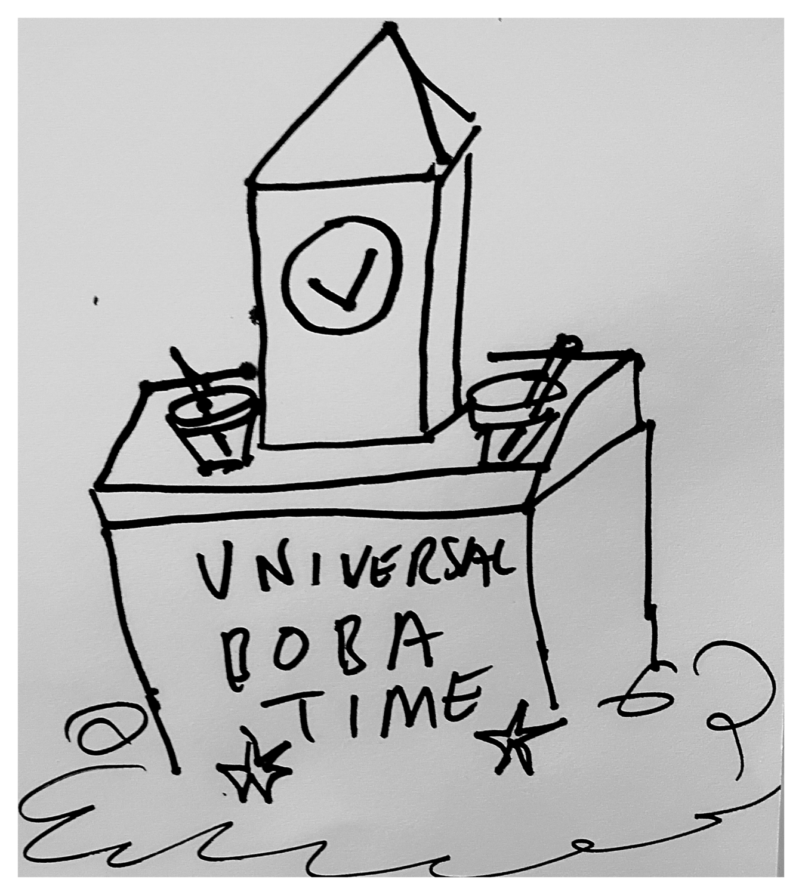

Print setup
Ctrl/Cmd + P · Paper size A4 · Margins: None · Scale: 100%
Issue 6 — generated via the bubble-tea-news-editor skill. No Menace Watch
this issue (monthly, not weekly — still not due until Issue 7); Issue 4's rotating cast
fills the slots instead, per Issue 5's exclusion-window note. Puzzle desk honestly notes
a gap it can't resolve: Issue 5's "which store restocked the cup lids?" teaser named only
two of what must be at least three stores, so, same house rule as Issue 1 and Issue 2,
nothing invented to fill it. Two new local advertisers, TeaDee Bubble Tea and NZ FSL
(a blog post, Boba Buzz), fill the two remaining ad boxes this issue.
Auckland · Weekly Edition
BUBBLE TEA NEWS
Issue 6 · 21 August 2026 · Complimentary — please take onebubbletea.nz · est. 2026
Case definition: any reusable metal straw hand-bent into a decorative shape (hearts, stars, one ambitious swan) and left standing in a café's communal jar rather than taken home. Five confirmed jars as of Wednesday, up from one after a regular at the corner café bent hers into the aforementioned swan "just to see." Two cafés further down the strip have since added "please take your straw home" signage, without success.
community-outbreak-bulletin
A Life, Counted
Loaf Forty-Four, and a Question I Didn't Ask
Wren
The counter woman brought her granddaughter in this Tuesday, small enough to need lifting onto the stool, and asked her to guess how many loaves I'd made "all up." The child said a hundred. I have made considerably more than a hundred of most things, across considerably more mornings than this bakery has existed. I said "close," which was not accurate, and did not correct it, which was.
Books · The Duckworth Scale
Sixth Duckworth Withheld Entirely, on Principle
Daffy Duck
"The Long Migwation Home" opened strong. A five, unquethtionably, right up until the epilogue credited "flock morale" to a gooth who, and I have thoroughly checked thith, wath napping for motht of chapter nine. Withheld the thixth Duckworth entirely ath a protetht. My editor athked if that'th even a real thcore. It ith now.
Technology · Product
The Lid
We redesigned the reusable cup lid. Every lid before this one asked you to think about which way was up. This one doesn't. You'll pick it up a thousand times before you ever notice you stopped checking. That's not a small thing. That's the whole thing. We spent eleven months on a seal you'll never once mention out loud, because the highest compliment a lid can receive is silence. One more thing: it comes in white.
Steve Jobs
Automotive · Showroom
Meadowbank Motors: The Podium Trade-In
Lewis Hamilton
You don't trade in a hatchback here. You retire it, with honours, the way a team retires a number. What rolls off the lot in its place corners like it's already memorised the apex of your own driveway. Financing lighter than a stripped-down qualifying chassis. This is not a runabout. This is pole position with a cupholder for two. (Meadowbank Motors is a fictional dealership. Not a real endorsement.)
Bubble Tea Trivia
Did You Know?
"Bubble" in bubble tea may not originally have meant the tapioca pearls at all. Some drink historians trace the name to the froth that forms on top when sweet milk tea is shaken by hand, a technique documented in Taiwanese tea stalls before the pearl-topped version became the norm.
In Every Issue
A new logic puzzle
Fresh local trivia
A rotating cast of columnists
Local ad space, weekly
Menace Watch, monthly — the editor's turn
"I said 'close,' which was not accurate, and did not correct it, which was."
— Wren, on being asked to guess
Joke of the Week
Why don't tapioca pearls ever panic? They always find a way to roll with it.
Overload NZ 2026
26–27 Sept · NZ International Convention Centre. Tickets: overload.co.nz — about five weeks out.
BUBBLE TEA NEWS · A weekly complimentary read for Auckland bubble tea retailers · All content satire/character-voice per each contributor's house disclaimer.
Bubble Tea News
Home Front · Sebastian's Watch
The Grocery Run, and the Trolley With the One Bad Wheel
Every trolley in the fleet pulled true except the one he always somehow drew, veering left with the quiet insistence of something that used to be enchanted and has settled, instead, for being difficult. He corrected course past the cereal aisle the way he once corrected a wyvern's flight path over open water, small adjustments, no credit expected, none given. Made it to the till three minutes over what the app estimates. Told no one. Logged it anyway.
Sebastian
Feature · Outer Reaches
The Shard That Wasn't Worth Guarding
Luke Skywalker, dispatched from the Jedha debris fields
Left the smallest piece behind on purpose this time: too dull to fence, too small to matter to anyone with a scanner. A kid from the settlement found it a day later and wore it on a cord around her neck, not knowing what it was, only that it caught the light. I didn't correct her either. Some things are worth more unidentified.
Field Notes · Sanctuary
Enclosure Eleven, Six Weeks Later
Alan Grant
0640. Enclosure eleven took feed from the gloved hand today, four seconds, no more, then withdrew like it hadn't happened. I have spent a career resisting the word "breakthrough" for exactly this reason: four seconds is not trust, it's a data point, and I intend to treat it as nothing more until it repeats. It felt, briefly, like more.
Investigations · Case File
Exhibit D: The Loading Spinner That Only Blinks Twice
Three unrelated Auckland bubble tea storefront sites now share a loading spinner that blinks exactly twice before resolving, an oddly specific animation timing to arrive at independently. Two of the three sites also misspell "tapioca" identically, in the same alt-text field, in the same place in the DOM. This paper has requested comment from all three. This paper has received comment from none of the three.
M. Voss, Investigations Desk
Puzzle of the Week
The Sizing Queue
Last week's Topping Trade, honestly recapped: Milkwood's rider carried the syrup restock, and Steep & Sorted's rider carried something other than cup lids — but with a third store's name never printed, there's no way to say whose delivery the cup lids actually were. Same gap as Issue 1's fourth drink for Ava: noted, not invented.
Sana's cup is not the Large one.
The Large cup holds grass jelly.
Sana's cup is bigger than Reo's.
The Small cup does not hold aloe vera.
Brisk warm-up · three regulars (Reo, Sana, Tama), three sizes, three toppings. Who ordered what? Answer next week — Ken Endo
Music · Review
One Song That Means It, One That's Test-Marketed to Death
"Porch Light" by a duo calling themselves Late August sounds like it was recorded in one take because it was. A little flat in the second verse, and better for it. The other single this week has clearly been in eleven rooms with eleven different consultants, and you can hear every single one of them; polished until there's nothing left to actually like.
Rebecca Black
Classifieds · Te Mana Whakaatu Framework (parody, non-affiliated)
This Week's Classifieds, Rated
FLATMATE WANTED: Quiet professional, non-smoker, R13. Contains mild peril (a shared bathroom schedule) and one scene of moderate passive-aggression via sticky note. FOR SALE: Exercise bike, unused, G. Contains coarse language directed at oneself, three months running. Ratings satire only; not affiliated with the real Classification Office of New Zealand.
In Memoriam
The Straw Nobody Bent
Skeletor
Every jar on the Meadowbank strip once held straws in their original, unremarkable, entirely straight condition. A small, honest order I had no particular objection to. That order is gone. Five jars now hold hearts, stars, and one deeply ambitious swan, and the plain straw, so far as I can determine, will not be returning. I did not bend a single one myself. I did, however, mention to a regular that a swan "sounded difficult." She proved me correct in the most irritating way possible: by succeeding.
Ask the Captain
Nervous on Meadowbank
Horatio McCallister
"How do I bring up wanting to define the relationship without scaring them off?" Nervous, ye don't scare a good vessel off by askin' where she's headed. Ye scare off the ones already lookin' for an exit. Ask plain, early, and calm. I've asked plainer things of stranger crews and lived. Ye'll live too. Fair winds.
The Boba Side

The Boba Side — original pen-and-paper gag, hand-drawn
Next week: Issue 7 excludes only this week's roster, reopening Issue 5's full cast — Nixon, Sherman McCoy, Shaggy & Scooby, Priya Anand, Winnie Zhao, The Stickybeak, Dana Foley, T. Marlow, Garfield and Clem Whitlock — alongside Robin Leach and Baxter Kline, still waiting since Issue 3. Menace Watch is due back at last, and Gordon Slate has already started muttering about the swan.